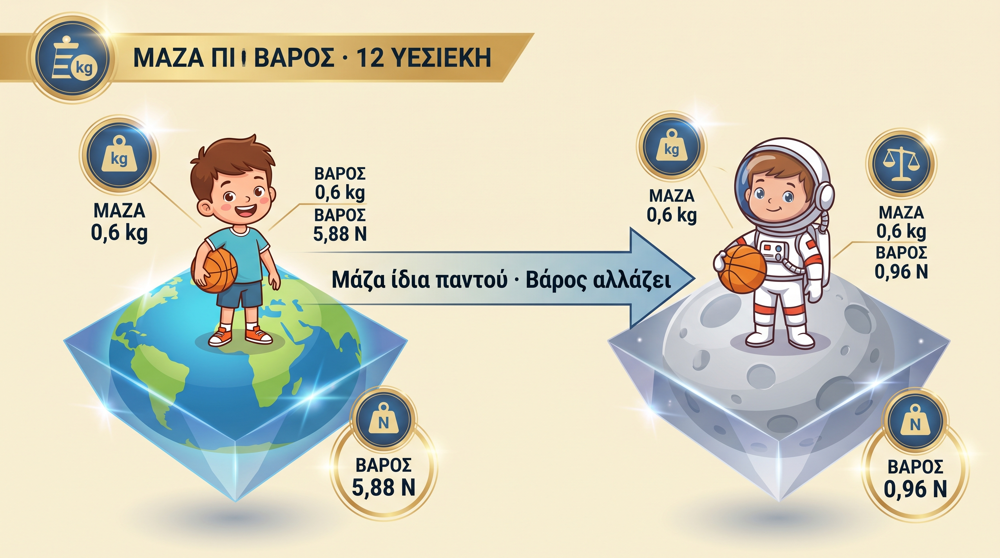
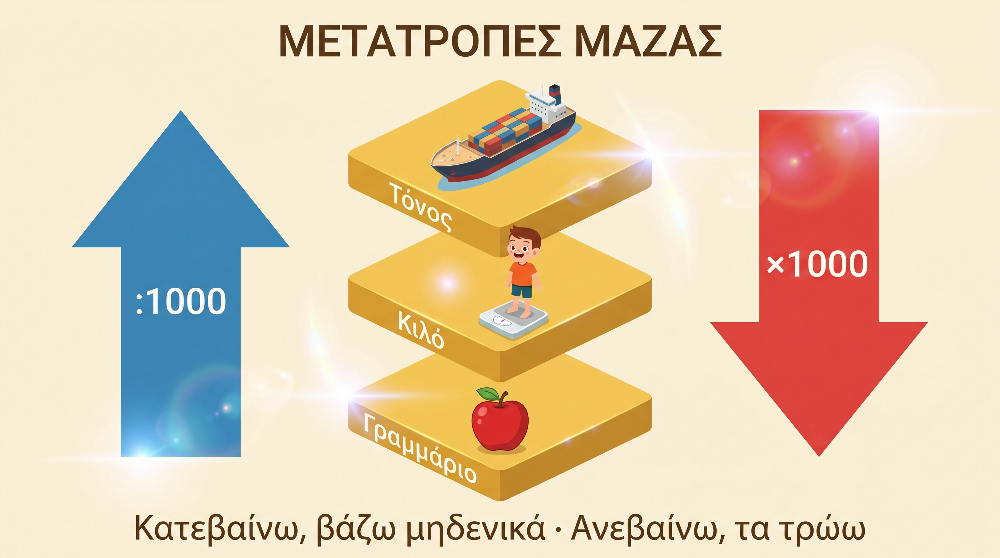
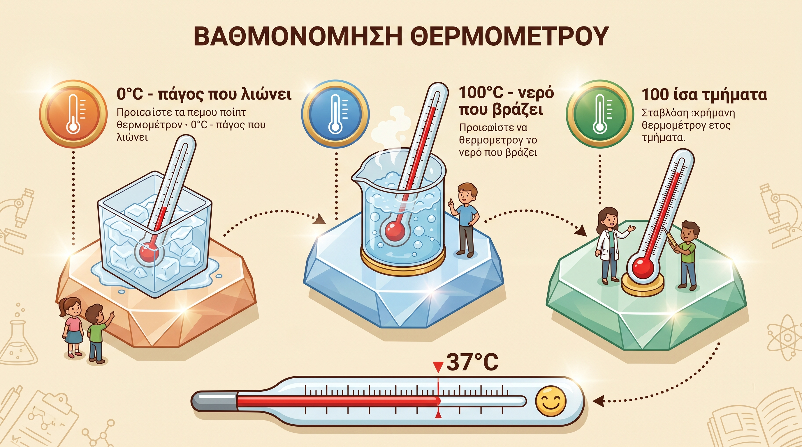
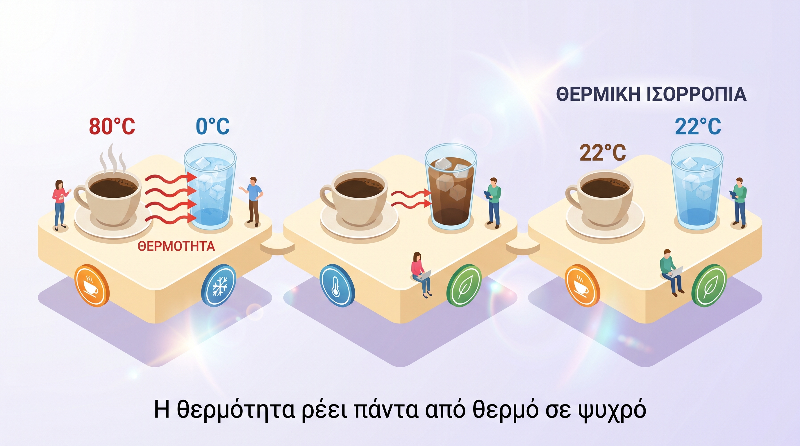
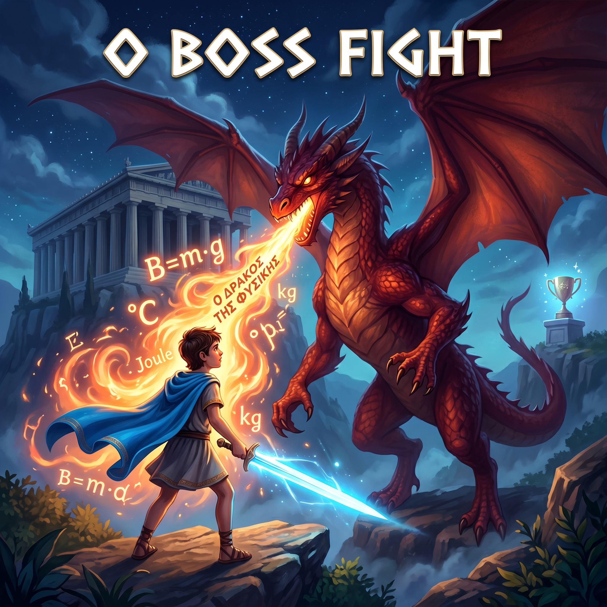

1. Τι είναι η Μάζα;
Μάζα (m) = η ποσότητα ύλης που έχει ένα σώμα. Είναι "το περιεχόμενο" — από πόση ύλη είσαι φτιαγμένος.
- Σύμβολο: m
- Μονάδα μέτρησης: 1 κιλό (kg)
- Μετριέται με: ζυγό ισορροπίας ή ηλεκτρονική ζυγαριά
- Σταθερή παντού: στη Γη, στη Σελήνη, στο διάστημα — ίδια!
Γαλαξίδι
🥘 Στην ταβέρνα της γιαγιάς η μερίδα σουβλάκι είναι 200 g (= 0,2 kg). Το καρβέλι ψωμί 500 g. Μια μεγάλη σκορδαλιά 250 g. Η ποσότητα ύλης τους είναι η μάζα.
Μπάσκετ
🏀 Η μπάλα μπάσκετ του Ajax South ζυγίζει περίπου 600 g (0,6 kg). Αυτή είναι η μάζα της. Θα είναι ίδια και στη Σελήνη — το βάρος, όμως, όχι!
2. Μάζα ≠ Βάρος
Αυτό μπερδεύει τους πάντες. Πρόσεξε — θα πέσει σίγουρα στο διαγώνισμα.
⚖️ Μάζα
- Ποσότητα ύλης
- Μονάδα: kg
- Ζυγός ισορροπίας
- Μονόμετρο
- Θεμελιώδες μέγεθος
- Σταθερή παντού
🧲 Βάρος
- Δύναμη που η Γη τραβάει το σώμα
- Μονάδα: Newton (N)
- Δυναμόμετρο
- Διανυσματικό
- Παράγωγο μέγεθος
- Αλλάζει ανάλογα τον τόπο

🎨 Infographic (Nano Banana 2) — ο Αίας και η μπάλα στη Γη και τη Σελήνη
▶ ANIMATION
🎬 Η μπάλα του Ajax South: Γη vs Σελήνη
Μάζα: 0,6 kg
🏀 ΙΔΙΑ
Μάζα: 0,6 kg
🏀 ΙΔΙΑ
Βάρος: 5,88 N
💪 Β = 0,6 × 9,8
Βάρος: 0,96 N
🪶 Β = 0,6 × 1,6
Ίδια μπάλα. Ίδια μάζα. Διαφορετικό βάρος γιατί η Σελήνη τραβάει 6 φορές λιγότερο.
💡 Ο χρυσός τύπος: B = m · g (όπου g ≈ 9,8 m/s² στη Γη, 1,6 m/s² στη Σελήνη)
Μάνος
Αν ο Μάνος σου έδινε να κουβαλήσεις ένα τσουβάλι 10 kg στη Γη και μετά στη Σελήνη: η μάζα είναι ίδια (10 kg), αλλά θα το ένιωθες 6 φορές πιο ελαφρύ στη Σελήνη γιατί το βάρος θα ήταν μόλις ~16 N αντί για 98 N.
3. Μετατροπές Μονάδων — Η Σκάλα
Όταν κατεβαίνεις (τόνο → κιλό → γραμμάριο): ×1000 για κάθε σκαλί.
Όταν ανεβαίνεις: :1000.

🎨 Infographic (Nano Banana 2) — η σκάλα των μονάδων
▶ ANIMATION
🎬 Το κουτί πέφτει τη σκάλα
Τόνος (t)
Κιλό (kg)
Γραμμάριο (g)
Κάθε σκαλί που κατεβαίνεις → ×1000. Αντίστροφα για ανέβασμα.
Παραδείγματα από τη ζωή του Αίαντα
- Γαλαξίδι Στο λιμάνι πιάνουν 2 τόνους ψάρια = 2.000 kg = 2.000.000 g
- Γαλαξίδι Η μερίδα σουβλάκι 200 g = 0,2 kg
- Μπάσκετ Η μπάλα 600 g = 0,6 kg
- Ένα σακί τσιμέντο 25 kg = 25.000 g
- Ο Γιώργος ζυγίζει 40 kg = 0,04 t
💡 Τρικ: "Κατεβαίνω, βάζω μηδενικά. Ανεβαίνω, τα τρώω."
4. Θερμοκρασία & Βαθμονόμηση
Θερμοκρασία = φυσικό μέγεθος που μας δείχνει πόσο θερμό ή ψυχρό είναι ένα σώμα.
- Μονάδα: βαθμοί Κελσίου (°C)
- Μετριέται με: θερμόμετρο
- Γαλαξίδι Η θάλασσα τον Πάσχα ~18°C. Το βραστό καφεδάκι στην παραλία ~75°C.

🎨 Infographic (Nano Banana 2) — τα 3 βήματα της βαθμονόμησης
▶ ANIMATION
🎬 Πώς βαθμονομούμε ένα θερμόμετρο
0°C ← πάγος
100°C ← βρασμός
1. Βυθίζουμε στον πάγο που λιώνει → σημειώνουμε 0°C
2. Βυθίζουμε σε νερό που βράζει → σημειώνουμε 100°C
3. Χωρίζουμε τη μέση σε 100 ίσα τμήματα → έτοιμο!
💡 Το χέρι στο μέτωπο δεν είναι ακριβές: εξαρτάται από την εμπειρία μας ΚΑΙ από τη θερμοκρασία του χεριού μας πριν. Αν το χέρι σου είναι παγωμένο από τα παγωτά, το μέτωπο θα σου φανεί "ζεστό" ακόμη κι αν είναι κανονικό.
5. Θερμότητα vs Θερμική Ενέργεια
🔥 Θερμότητα
Η ενέργεια που μεταφέρεται από θερμό σώμα σε ψυχρό, μέχρι να αποκτήσουν την ίδια θερμοκρασία.
⚡ Θερμική Ενέργεια
Το άθροισμα των κινητικών ενεργειών των μορίων ενός σώματος — λόγω των συνεχών τυχαίων κινήσεών τους.
Γαλαξίδι
☕ Ο ελληνικός καφές στο καφενείο της παραλίας έχει θερμική ενέργεια μέσα του (τα μόρια του νερού κινούνται έντονα). Καθώς τον αφήνεις, θερμότητα φεύγει από τον καφέ προς τον αέρα. Η θερμική ενέργεια είναι μέσα. Η θερμότητα είναι η ροή.
💡 Διαφορά-κλειδί: Η θερμική ενέργεια είναι μέσα στο σώμα. Η θερμότητα μεταφέρεται από σώμα σε σώμα.
6. Θερμική Ισορροπία
Θερμική ισορροπία = όταν δύο σώματα έχουν την ίδια θερμοκρασία. Τότε δεν μεταφέρεται θερμότητα.

🎨 Infographic (Nano Banana 2) — η θερμότητα ρέει από θερμό σε ψυχρό
▶ ANIMATION
🎬 Καφές vs παγωμένος φραπέ στο τραπέζι
Η θερμότητα ρέει από τον ζεστό καφέ στον αέρα και στον φραπέ. Τέλος: και τα δύο ~22°C (θερμοκρασία δωματίου) → θερμική ισορροπία.
Το κλασικό παράδειγμα από το βιβλίο
- Ποτήρι με πάγο 🧊 — απορροφά θερμότητα → 0°C → λιώνει → ανεβαίνει στη θερμοκρασία δωματίου
- Ποτήρι με νερό 80°C 🔥 — αποβάλλει θερμότητα → κρυώνει → φτάνει στη θερμοκρασία δωματίου
- Τέλος: και τα δύο στην ίδια θερμοκρασία → θερμική ισορροπία
💡 Γιατί περιμένουμε το θερμόμετρο: πρέπει να έρθει σε θερμική ισορροπία με το σώμα μας. Αλλιώς δείχνει λάθος.
7. Τα Μόρια — Θερμό vs Ψυχρό
Η θερμοκρασία είναι, στην πραγματικότητα, πόσο γρήγορα κινούνται τα μόρια.
🔥 Θερμό Σώμα (σαν το Γαλαξίδι τον Ιούλιο)
Μόρια που χορεύουν παλαβά. Μεγάλη κινητική ενέργεια.
❄️ Ψυχρό Σώμα (χειμωνιάτικο πρωί)
Μόρια που κινούνται νωχελικά. Χαμηλή κινητική ενέργεια.
💡 Κοίτα πόσο γρήγορα τρέμουν οι κουκκίδες. Αυτό κυριολεκτικά είναι η διαφορά ζέστης-κρύου.
Γαλαξίδι
🏊 Όταν βουτάς στη θάλασσα του Γαλαξιδίου τον Πάσχα (18°C), τα μόρια του νερού κινούνται λιγότερο απ' όσο θα κινιόντουσαν τον Αύγουστο (26°C). Γι' αυτό σου φαίνεται πιο κρύο!
8. Τα 5 που πρέπει να θυμάσαι
| # | Κανόνας |
|---|
| 1 | Μάζα = ύλη (kg). Βάρος = δύναμη (N). Δεν είναι το ίδιο. |
| 2 | Β = m · g, όπου g ≈ 9,8 m/s² |
| 3 | Κατεβαίνεις τη σκάλα μονάδων → ×1000. Ανεβαίνεις → :1000 |
| 4 | Θερμοκρασία = πόσο ζεστό. Θερμότητα = ενέργεια που ρέει. Θερμική ισορροπία = ίδια θερμοκρασία. |
| 5 | Βαθμονόμηση θερμομέτρου: πάγος=0°C, νερό που βράζει=100°C, 100 τμήματα στη μέση. |
🎯 Έτοιμος για το κουίζ; Πάτα «Κουίζ» πάνω και δοκίμασε. Αν κάνεις λάθος — δεν πειράζει, μαθαίνεις. Μετά έρχεται το Boss Fight 👑 για τον αληθινό μαχητή!

🎨 Ο Αίας πολεμά τον Δράκο της Φυσικής — Nano Banana 2
👑 BOSS FIGHT: Ο Δράκος της Φυσικής
Καλώς ήρθες, Ήρωα Αία. Έφτασες στο τελικό κελί του μπουντρουμιού. Ο Δράκος της Φυσικής σε προκαλεί σε 5 τελικές ερωτήσεις. Δεν είναι εύκολες — πρέπει να σκεφτείς, όχι απλά να θυμηθείς. Κάθε σωστή απάντηση μειώνει την υγεία του δράκου. Αν νικήσεις, κερδίζεις το Έπαθλο του Διαγωνίσματος. 🏆
🐉 Δράκος HP: 100/100
⚔️ Επιθέσεις: 0/5
🛡️ Ήρωας Αίας: έτοιμος